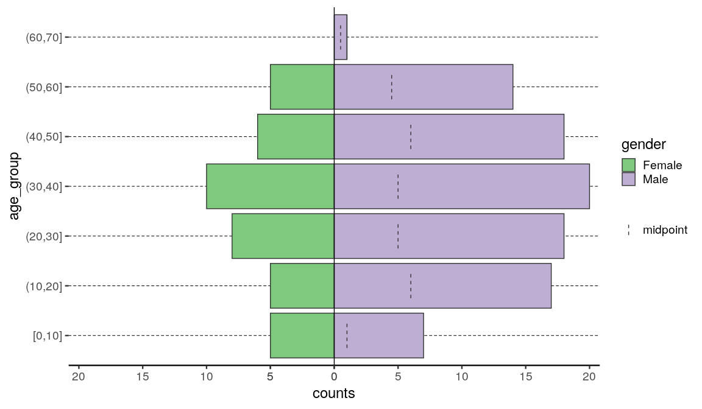
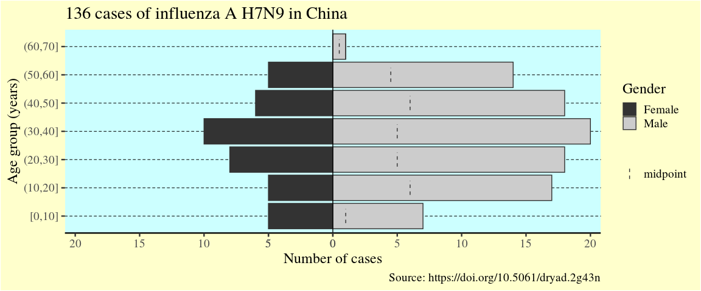
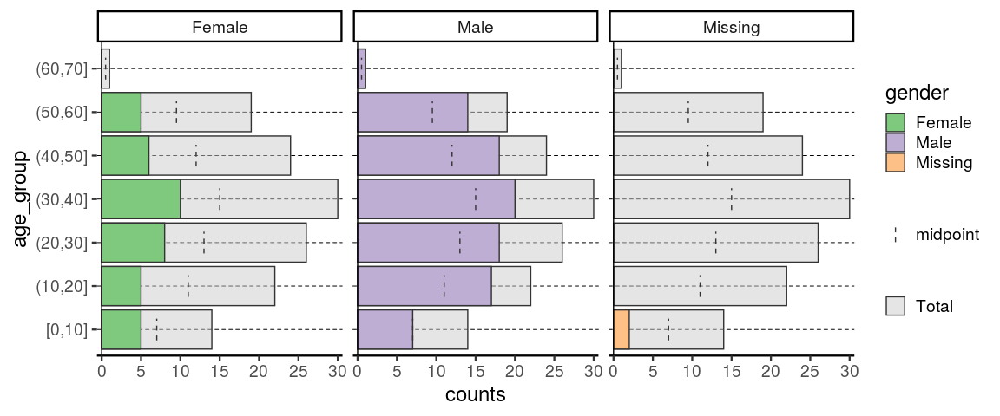
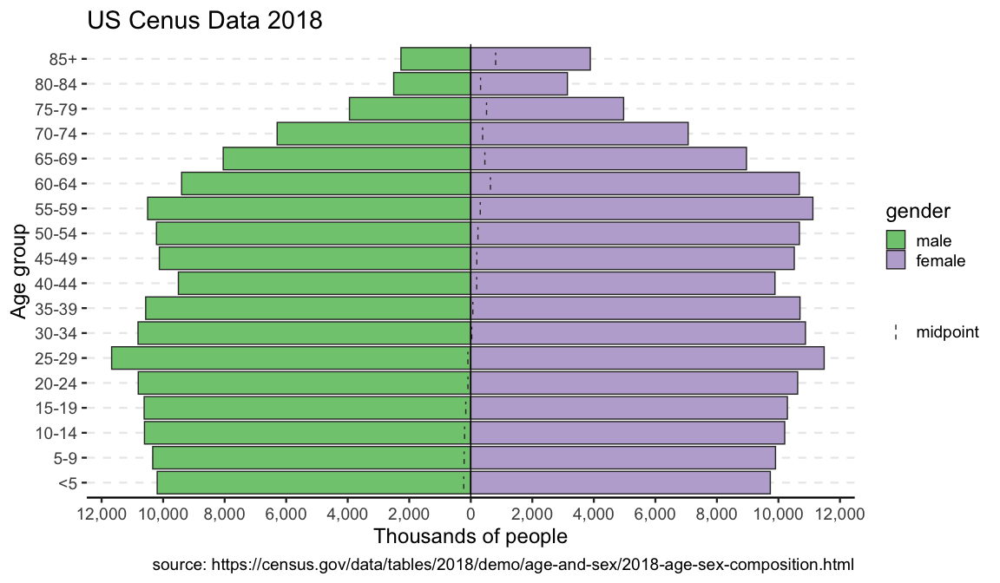
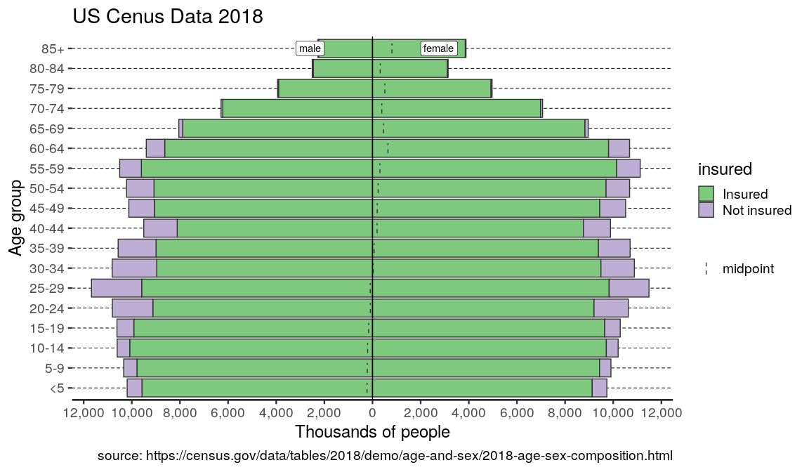
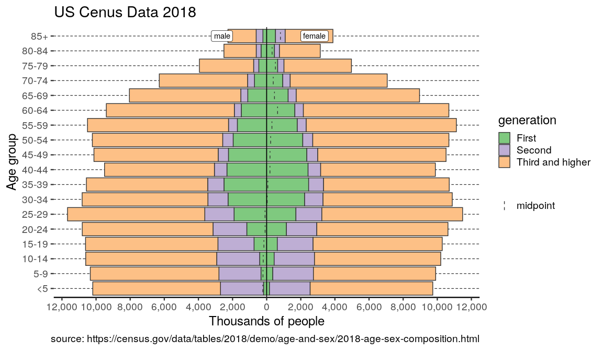
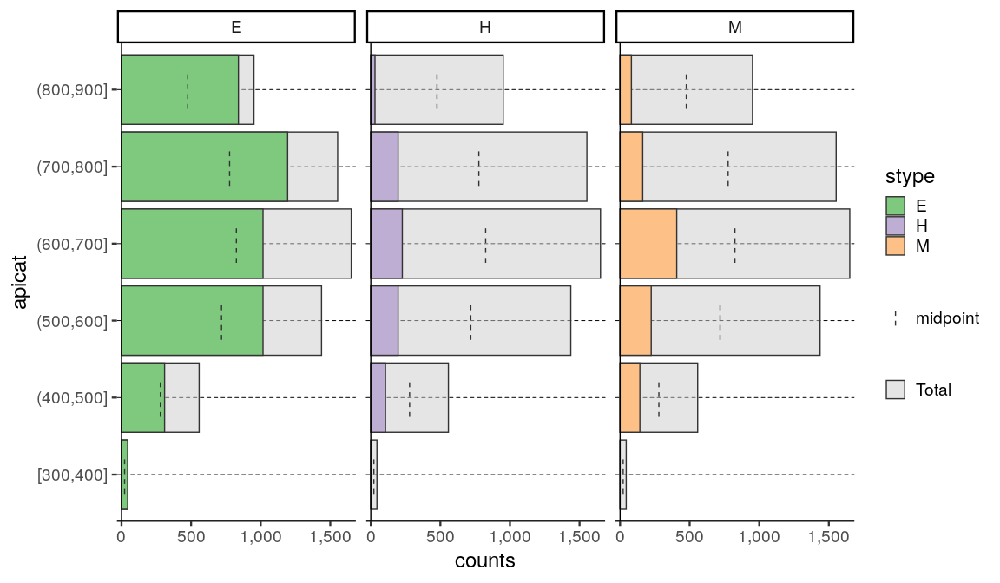

apyramid
The goal of {apyramid} is to provide a quick method for visualizing census data stratified by age and one or two categorical variables (e.g. gender and health status).
Installation
{apyramid} is not currently on CRAN, but you can install it from the R4EPIs GitHub page like so:
Example
The {apyramid} package was primarily designed for quick visualisation of un-aggregated linelist data in field epidemiological situations. It has one available function:
-
age_pyramid()returns age pyramid visualizations of linelist, survey, or pre-aggregated census data.
library("outbreaks")
library("apyramid")
library("ggplot2")
old_theme <- theme_set(theme_classic(base_size = 18))
flu <- outbreaks::fluH7N9_china_2013
# data preparation (create age groups from ages)
autocut <- function(x) {
cut(x, breaks = pretty(x), right = TRUE, include.lowest = TRUE)
}
flu$age_group <- autocut(as.integer(flu$age))
levels(flu$gender) <- c("Female", "Male")
head(flu)
#> case_id date_of_onset date_of_hospitalisation date_of_outcome outcome
#> 1 1 2013-02-19 <NA> 2013-03-04 Death
#> 2 2 2013-02-27 2013-03-03 2013-03-10 Death
#> 3 3 2013-03-09 2013-03-19 2013-04-09 Death
#> 4 4 2013-03-19 2013-03-27 <NA> <NA>
#> 5 5 2013-03-19 2013-03-30 2013-05-15 Recover
#> 6 6 2013-03-21 2013-03-28 2013-04-26 Death
#> gender age province age_group
#> 1 Male 87 Shanghai (50,60]
#> 2 Male 27 Shanghai [0,10]
#> 3 Female 35 Anhui (10,20]
#> 4 Female 45 Jiangsu (10,20]
#> 5 Female 48 Jiangsu (10,20]
#> 6 Female 32 Jiangsu [0,10]
flup <- age_pyramid(flu, age_group, split_by = gender)
#> Warning: 2 missing rows were removed (0 values from `age_group` and 2
#> values from `gender`).
flup
Since the result is a ggplot2 object, it can be customized like one:
flup +
scale_fill_grey(guide = guide_legend(order = 1)) +
theme(text = element_text(size = 18, family = "serif")) +
theme(panel.background = element_rect(fill = "#ccffff")) +
theme(plot.background = element_rect(fill = "#ffffcc")) +
theme(legend.background = element_blank()) +
labs(
x = "Age group (years)",
y = "Number of cases",
fill = "Gender",
title = "136 cases of influenza A H7N9 in China",
caption = "Source: https://doi.org/10.5061/dryad.2g43n"
)
#> Scale for 'fill' is already present. Adding another scale for 'fill',
#> which will replace the existing scale.
One of the advantages of {apyramid} is that it will adjust to account for non-binary categorical variables. For example, in the flu data set, there are two cases with no gender reported. If we set na.rm = FALSE, we can the age distribution of these two cases:

Pre-aggregated data
{apyramid} can also be used to visualize pre-aggregated data. This example is the US census data from 2018:
us_labels <- labs(
x = "Age group",
y = "Thousands of people",
title = "US Cenus Data 2018",
caption = "source: https://census.gov/data/tables/2018/demo/age-and-sex/2018-age-sex-composition.html")
data(us_2018)
us_2018
#> # A tibble: 36 x 4
#> age gender count percent
#> <fct> <fct> <int> <dbl>
#> 1 <5 male 10193 6.4
#> 2 <5 female 9736 5.9
#> 3 5-9 male 10338 6.5
#> 4 5-9 female 9905 6
#> 5 10-14 male 10607 6.7
#> 6 10-14 female 10204 6.2
#> 7 15-19 male 10617 6.7
#> 8 15-19 female 10291 6.2
#> 9 20-24 male 10809 6.8
#> 10 20-24 female 10625 6.4
#> # … with 26 more rows
p <- age_pyramid(us_2018, age_group = age, split_by = gender, count = count)
p + us_labels
You can also use another factor to split the data:
data(us_ins_2018) # stratified by gender and health insurance status
data(us_gen_2018) # stratified by gender and generational status
p_ins <- age_pyramid(us_ins_2018, age_group = age, split_by = gender, stack_by = insured, count = count)
p_gen <- age_pyramid(us_gen_2018, age_group = age, split_by = gender, stack_by = generation, count = count)
p_ins + us_labels

Survey Data
Beyond that, survey data can be incorporated with the help of srvyr. Note that while it will show the weighted counts, it will not show the confidence intervals as that highly depends on the appropriate choice of CI estimator. This is meant as more of quick visualization tool for EDA.
library(srvyr, warn.conflicts = FALSE)
data(api, package = "survey")
dstrata <- apistrat %>%
mutate(apicat = cut(api00, pretty(api00), include.lowest = TRUE, right = TRUE)) %>%
as_survey_design(strata = stype, weights = pw)
age_pyramid(dstrata, apicat, split_by = stype)